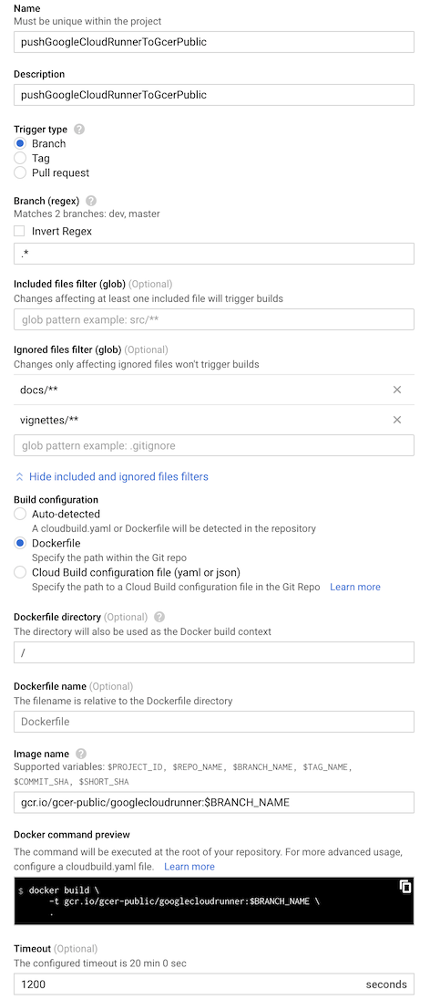
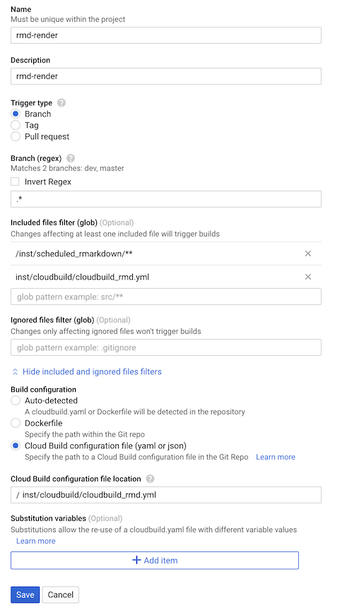

Example Use Cases for googleCloudRunner
2020-02-14
usecases.RmdHere will be some example use cases you can use googleCloudRunner for.
Since almost any code can be called and passed via Docker images, there are a lot of potential uses.
- Scheduling R scripts in the cloud
- R APIs to call from anywhere
- Triggering R code to run on events, such as BigQuery table updates or GitHub pushes
- Checking a package, creating a website, deploying it to GitHub
- Running authenticated tests for R packages in private environment
- Creating an Rmarkdown powered website using Cloud Run
- Integrating R with other language applications
- Public and private Docker image creations on triggers
Some community contributed Cloud Build images are listed here, including hugo, make, and tar.
You can use any public Docker image if you know which arguments etc. to send to it, for example the Slack messages are using technosophos/slack-notify.
Deploy a pkgdown website for your R package
When creating an R package pkgdown is a fantastic resource for creating a package website from your R function’s documentation and vignettes.
This workflow uses Google’s Key Management Store to securely hold your Git ssh login details, then use those details to commit a built website on each Git commit. This means you do not have to build the website locally.
Each commit you make, a background task will build the website with your changes and commit it back to the repo - see example for this website:

A suggested setup workflow to do this is below:
- Encrypt your git SSH key with gcloud using these instructions, noting your keyring and key for the next steps.
- This will create an encrypted file - add it to your R package’s directory.
- Use
cr_deploy_pkgdown()to create a cloudbuild.yml file in your R package’s directory, giving it your decryption details from step 1.
- Add and commit the cloudbuild.yml file to your git repository
- Go to GCP console > Cloud Build > Triggers and link your git repo to Cloud Build.
- Create a Build Trigger for your git repository:
- point at the cloudbuild.yml file you commited (e.g. cloudbuild-pkgdown.yml)
- Make sure to exclude the
docs/**folder in the build trigger else the trigger will retrigger when the website is built and pushed to the repo! - You may also want to exclude other folders such as tests/**
- Add a substitution variable
_GITHUB_REPOwith your Git address you want to push to e.g. MarkEdmondson1234/googleCloudRunner
The below is an example for googleCloudRunner’s website:

The example above also adds other substitution variables to help run some of the examples.
You can customise the deployment more by using cr_buildstep_pkgdown() in your own custom build files. For instance, you could download other auth keys using cr_buildstep_decrypt() again, so that your website has working authenticated examples.
Run package tests and code coverage
This workflow will run the package tests you have upon each commit to your git repo.
You can also optionally submit those test results to codecov via the excellent covr R package, helping you see which code your tests actually test. This is what creates this badge for this package:

If you do not need online authentication for your tests, then this is only a case of deploying the premade default cloudbuild.yml file via cr_deploy_packagetests().
The below assumes you have created tests for your package.
- If you want to use Codecov, generate a Codecov token on its website and link it to your git repository
- Create the tests cloudbuild.yml file via
cr_deploy_packagetests() - Add and commit the cloudbuild.yml file to your git repository
- Go to GCP console > Cloud Build > Triggers and link your git repo to Cloud Build.
- Create a Build Trigger for your git repository:
- point at the cloudbuild.yml file you commited (e.g. cloudbuild-tests.yml)
- Exclude any folders such as the
docs/**folder where changes should not trigger a recheck - Add a substitution variable
_CODECOV_TOKENif you are using it
The below is an example for googleCloudRunner’s website:

The example above also adds other substitution variables to help run some of the examples.
Authenticated tests
You can customise the deployment more by using cr_buildstep_packagetests() in your own custom build files.
For googleCloudRunner and API packages in general, an authentication key is needed to run online tests. This authentication key can be encrypted via gcloud and added to Google Cloud KMS by adding a decryption step to your tests via cr_buildstep_decrypt().
In that case, the decryption step needs to occur before the tests run, which you can do by supplying cr_buildstep_decrypt() to cr_deploy_packagetests().
You will also want to use that auth file somehow, in the below example it is placed in an environment argument that your tests use to find the authentication file:
cr_deploy_packagetests(
steps = cr_buildstep_decrypt("auth.json.enc", "auth.json",
keyring = "my-keyring", key = "my-key"),
env = c("NOT_CRAN=true", "MY_AUTH_FILE=auth.json")
)Use the resulting cloudbuild.yml file in the same manner as unauthenticated tests.
Create Docker image of a package each commit
If you just want a one-off Docker image, use cr_deploy_docker() or make your own build via cr_buildstep_docker()

If you want the Docker image to rebuild each git commit, this is what is used to deploy this package to gcr.io/gcer-public/googlecloudrunner - in this case the Dockerfile in the root of the repo is built. Simply place the Dockerfile in the root of your repo, and then create a Build Trigger with similar settings:

Migrate an existing scheduled Docker container
You may have an existing Docker container containing code, that doesn’t need a public URL.
For example, a self-contained R script with googleAnalyticsR and bigQueryR pre-installed, that downloads data from Google Analytics and uploads it to BigQuery. This may be running on a VM from googleComputeEngineR, Kubernetes or Airflow KubernetesPodOperator.
If you give the cloud build service email the right permissions, then this can all be done on Cloud Build + Cloud Scheduler.
For example, say your existing container is called gcr.io/my-project/my-r-script. A Cloud Build could look simply like this:
r_code <- cr_build_yaml(
cr_buildstep("gcr.io/my-project/my-r-script")
)
build <- cr_build(r_code)
built <- cr_build_wait(build)You could add other steps if you wanted, such as sending an email when done via cr_buildstep_mailgun() or cr_buildstep_slack():
r_code <- cr_build_yaml(
cr_buildstep("gcr.io/my-project/my-r-script"),
cr_buildstep_slack("The script run ok")
)
build <- cr_build(r_code, `_SLACK_WEBHOOK` = "https://your_slack_webhook")
built <- cr_build_wait(build)To set this up in a schedule, add it to the scheduler like so:
Trigger an R function from pubsub
This uses cr_deploy_plumber to deploy an R API that can then be triggered from pub/sub events, such as Cloud logging events or when files get updated in a Cloud Storage bucket. This in turn can trigger other Cloud Builds.
A plumber API that accepts pub/sub messages is facilitated by cr_plumber_pubsub()
api.R:
# example function echos back pubsub message
# change to do something more interesting with event data
pub <- function(x){
paste("Echo:", x)
}
#' Recieve pub/sub message
#' @post /pubsub
#' @param message a pub/sub message
function(message=NULL){
googleCloudRunner::cr_plumber_pubsub(message, pub)
}Deploy the R API using an image that has plumber and googleCloudRunner installed. There is one available at gcr.io/gcer-public/googlecloudrunner
Dockerfile:
FROM gcr.io/gcer-public/googlecloudrunner:master
COPY [".", "./"]
ENTRYPOINT ["R", "-e", "pr <- plumber::plumb(commandArgs()[4]); pr$run(host='0.0.0.0', port=as.numeric(Sys.getenv('PORT')))"]
CMD ["api.R"]Put both the Dockerfile and the api.R script in the same folder then deploy it to Cloud Run:
Or use the RStudio gadget:

Once built you will have a pub/sub live that will trigger the function you defined. You can test pubsub messages via cr_pubsub()
In this case the function only echos, but you can modify the function to call other libraries, functions, operate on data sent in pubsub such as bucket object names, BigQuery tableIds, etc.
Build an Rmd each git commit and host its HTML on Cloud Storage
Cloud Storage can host public HTML files like a website, which can be accessed via public or private viewers. This can be useful in setting up reporting infrastructure.
The Cloud Build below makes use of Cloud Build artifacts to send the built Rmd files to a public Cloud Storage bucket. When an Rmd file is committed to git, this is rebuilt.
r <- "rmarkdown::render('scheduled_rmarkdown.Rmd', output_file = 'scheduled_rmarkdown.html')"
rmd_build <- cr_build_yaml(
steps = cr_buildstep_r(
id="render rmd",
r = r,
name = "gcr.io/gcer-public/render_rmd:master",
dir = "inst/scheduled_rmarkdown/"
),
artifacts = cr_build_yaml_artifact(
"inst/scheduled_rmarkdown/scheduled_rmarkdown.html",
bucket = "mark-edmondson-public-read")
)
# write out build to submit with repo
cr_build_write(rmd_build, file = "inst/cloudbuild/cloudbuild_rmd.yml")The Rmd will build upon each commit, adapting to changes in the Rmd file.
The example Rmd file is build and available on a public Cloud Storage bucket - the above example is available at this link

The two buildtriggers then build the Dockerfile to render the image (with all the necessary R libraries installed) and a build trigger to run the actual build upon each commit

An example of the rendering Rmd build trigger in the web UI is below:

Build and deploy Rmd files to Cloud Run on a schedule
I have a flexdashboard that shows data from a Google Sheet with ggplotly. What's the best way to host the dashboard somewhere and make it so it shows the latest data? i.e. how should I show dynamic data in an RMarkdown dashboard? Continually reknit? Make a plumber API? #rstats
— Andrew Heiss, PhD (@andrewheiss) January 1, 2020
Cloud Run scales from 0 to millions of hits, so can be an option for hosting a website. In particular you may want a private internal website, have R code executing via a plumber API in the same container, or have lots of traffic or data that goes over other free hosting options such as GitHub pages. A nginx server configuration is included to host any HTML you provide via cr_deploy_html().
You may prefer using Cloud Storage public URLs if you don’t need any of Cloud Run’s features, like the previous example.
Coupled to that, a common use case is to render Rmd files and host them on a website like the tweet above. For the above tweet scenario, the Rmd has a setup block that reads from googlesheets via the code below:
```{r setup, include=FALSE}
library(flexdashboard)
library(googlesheets4)
library(ggplot2)
library(plotly)
library(dplyr)
# for public Googlesheets.
# If private see https://gargle.r-lib.org/articles/non-interactive-auth.html
sheets_deauth()
# this is the data that may update each time the Rmd is rendered
gm <- sheets_example("gap") %>% read_sheet()
gm_agg <- gm %>%
mutate(gdp=gdpPercap*pop) %>%
filter(continent=="Africa") %>%
group_by(year) %>%
summarize(mean(lifeExp), mean(gdp))
p <- ggplot(gm, aes(gdpPercap, lifeExp)) + theme_minimal() + scale_x_log10()
```The build Rmd docker in this case needs all the libraries listed (flexdashboard, googlesheets4 etc.) included in its build - this could be built before hand in another Cloud Build - in this case the libraries are all in gcr.io/gcer-public/render_rmd
For this example, the build is not reading from a git repo but the Rmd file is downloaded from a Cloud Storage bucket, that you may have uploaded to manually, via googleCloudStorageR or perhaps copied over from a repo in another Cloud Build on a Build Trigger.
The scheduled build then can be enabled via:
- Uploading your Rmarkdown files to a Cloud Storage bucket
- Create a build that will:
- download the Rmd file
- render the Rmd creating the HTML files
- configure nginx for Cloud Run,
- build a Docker image of nginx with your HTML
- serve it on Cloud Run.
r <- "rmarkdown::render('scheduled_rmarkdown.Rmd', output_file = 'scheduled_rmarkdown.html')"
build_rmd <- cr_build_yaml(
steps = c(
cr_buildstep(
id = "download Rmd template",
name = "gsutil",
args = c("cp",
"gs://mark-edmondson-public-read/scheduled_rmarkdown.Rmd",
"scheduled_rmarkdown.Rmd"),
),
cr_buildstep_r(
id="render rmd",
r = r,
name = "gcr.io/gcer-public/render_rmd:master"
),
cr_buildstep_nginx_setup("/workspace/"),
cr_buildstep_docker("html-on-cloudrun", tag = "$BUILD_ID"),
cr_buildstep_run(name = "my-html-on-cloudrun",
image = "gcr.io/mark-edmondson-gde/html-on-cloudrun:$BUILD_ID",
concurrency = 80)
),
images = "gcr.io/mark-edmondson-gde/html-on-cloudrun:$BUILD_ID",
)- Run a test build to check it works.
You should see a Cloud Run URL in the logs, like this one: https://my-html-on-cloudrun-ewjogewawq-ew.a.run.app/scheduled_rmarkdown.html

- Schedule the build using cron syntax
schedule_me <- cr_build_schedule_http(built)
cr_schedule("rmd-on-cloudrun", "15 8 * * *", httpTarget = schedule_me)
#==CloudScheduleJob==
#name: projects/project-name/locations/europe-west1/jobs/rmd-on-cloudrun
#state: ENABLED
#httpTarget.uri: https://cloudbuild.googleapis.com/v1/projects/project-name/builds
#httpTarget.httpMethod: POST
#userUpdateTime: 2020-01-04T08:34:42Z
#schedule: 15 8 * * *
#timezone: UTC Do it all in R using cr_deploy_r()
An alternative if you only wanted to do a scheduled deployment would be to put all steps in an R script (downloading, building and uploading to Cloud Storage via googleCloudStorageR) and use the RStudio gadget or cr_deploy_r()

Polygot Cloud Builds - integrating R code with other languages
Since Docker containers can hold any language within them, they offer a universal UI to combine languages. This offers opportunities to extend other languages with R features, and give other languages access to R code without needing to know R.
An example below uses:
-
gcloud- Google’s Cloud command line tool to access Google’s key management store and download an authentication file, and pushes to BigQuery -
gago- A Go package for fast downloads of Google Analytics data -
R- R code to create an Rmd file that will hold interactive forecasts of the Google Analytics data viacr_buildstep_r() -
nginx- serve up the Rmd files rendered into HTML and hosted on Cloud Run viacr_deploy_html()
And will perform downloading unsampled data from Google Analytics, creating a statistical report of the data and then uploading the raw data to BigQuery for further analysis.
library(googleCloudRunner)
polygot <- cr_build_yaml(
steps = c(
cr_buildstep(
id = "download encrypted auth file",
name = "gsutil",
args = c("cp",
"gs://marks-bucket-of-stuff/auth.json.enc",
"/workspace/auth.json.enc"),
),
cr_buildstep_decrypt(
id = "decrypt file",
cipher = "/workspace/auth.json.enc",
plain = "/workspace/auth.json",
keyring = "my-keyring",
key = "ga_auth"
),
cr_buildstep(
id = "download google analytics",
name = "gcr.io/gcer-public/gago:master",
env = c("GAGO_AUTH=/workspace/auth.json"),
args = c("reports",
"--view=81416156",
"--dims=ga:date,ga:medium",
"--mets=ga:sessions",
"--start=2014-01-01",
"--end=2019-11-30",
"--antisample",
"--max=-1",
"-o=google_analytics.csv"),
dir = "build"
),
cr_buildstep(
id = "download Rmd template",
name = "gsutil",
args = c("cp",
"gs://mark-edmondson-public-read/polygot.Rmd",
"/workspace/build/polygot.Rmd")
),
cr_buildstep_r(
id="render rmd",
r = "lapply(list.files('.', pattern = '.Rmd', full.names = TRUE),
rmarkdown::render, output_format = 'html_document')",
name = "gcr.io/gcer-public/packagetools:master",
dir = "build"
),
cr_buildstep_bash(
id = "setup nginx",
bash_script = system.file("docker", "nginx", "setup.bash",
package = "googleCloudRunner"),
dir = "build"
),
cr_buildstep_docker(
# change to your own container registry
image = "gcr.io/gcer-public/polygot_demo",
tag = "latest",
dir = "build"
),
cr_buildstep_run(
name = "polygot-demo",
image = "gcr.io/gcer-public/polygot_demo",
concurrency = 80),
cr_buildstep(
id = "load BigQuery",
name = "gcr.io/cloud-builders/gcloud",
entrypoint = "bq",
args = c("--location=EU",
"load",
"--autodetect",
"--source_format=CSV",
"test_EU.polygot",
"google_analytics.csv"
),
dir = "build"
)
)
)
# build the polygot cloud build steps
build <- cr_build(polygot)
built <- cr_build_wait(build)An example of the demo output is on this Cloud Run instance URL: https://polygot-demo-ewjogewawq-ew.a.run.app/polygot.html

It also uploads the data to a BigQuery table:

This constructed cloud build can also be used outside of R, by writing out the Cloud Build file via cr_build_write()
# write out to cloudbuild.yaml for other languages
cr_build_write(polygot)
# 2019-12-28 19:15:50> Writing to cloudbuild.yamlThis can then be scheduled as described in Cloud Scheduler section on scheduled cloud builds.
schedule_me <- cr_build_schedule_http(built)
cr_schedule("polygot-example", "15 8 * * *", httpTarget = schedule_me)An example of the cloudbuild.yaml is on GitHub here.